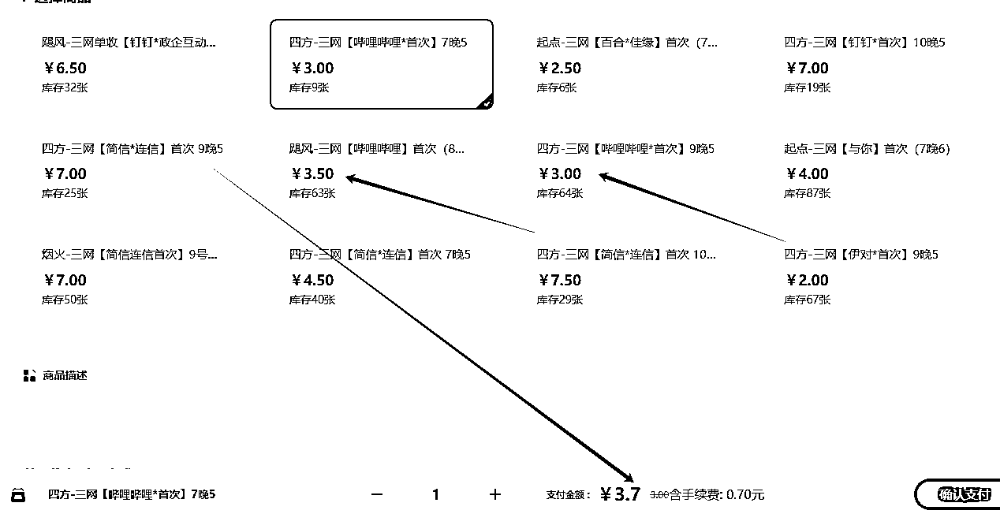
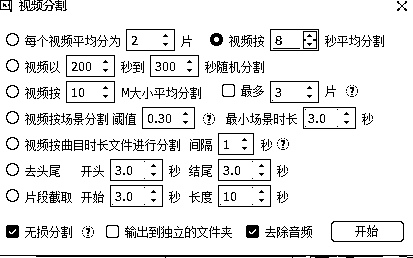
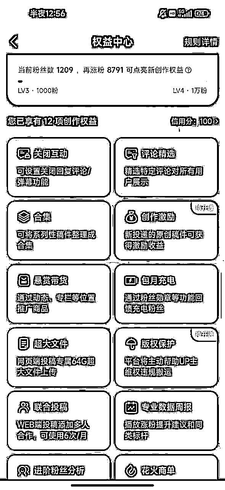
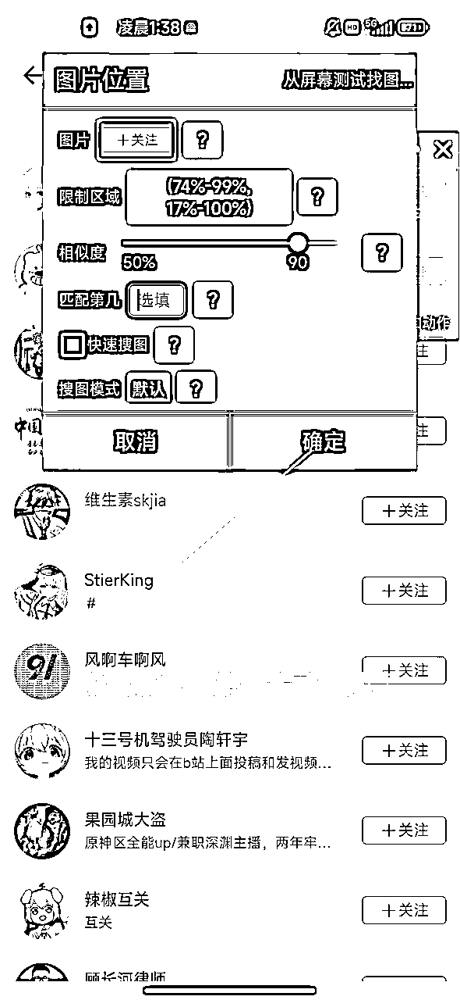
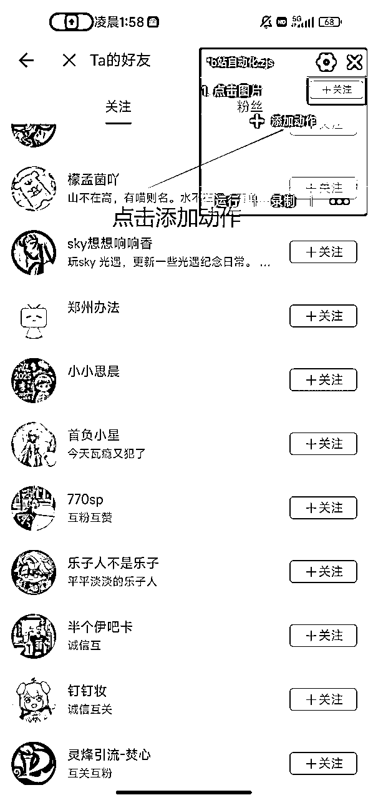
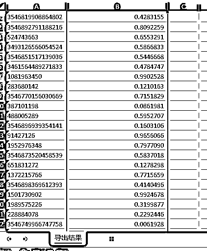
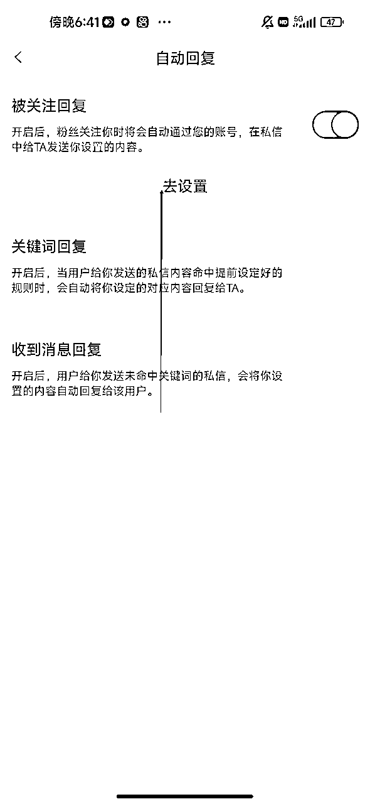
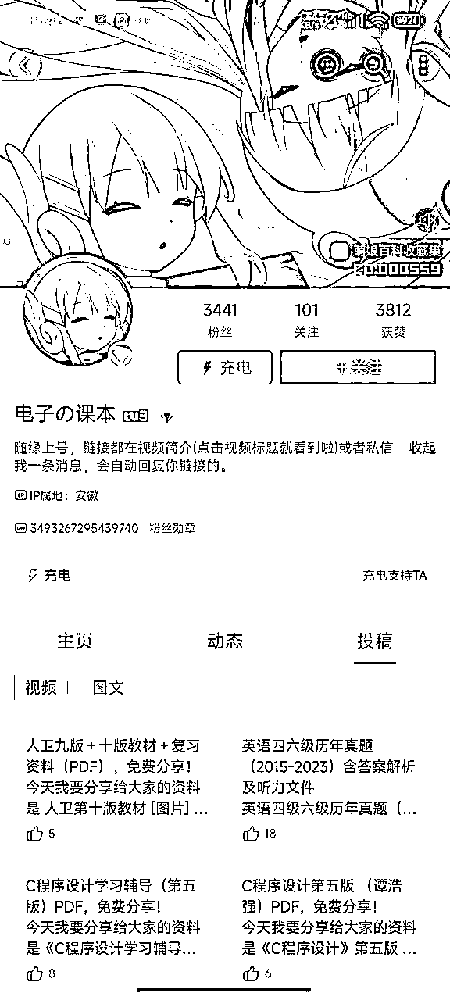
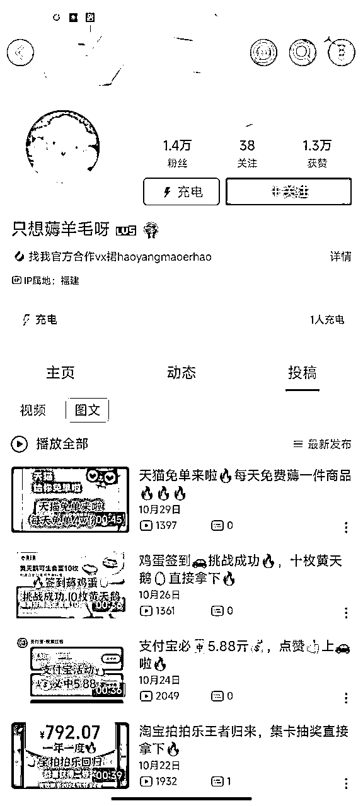

来源：https://y9j12wbinr.feishu.cn/docx/J5SydlVtpoxdvHx2P5XcN2tInue
我整个教程是以实操为主，不讲那些空话，确保你能跟着我教程来，绝对能跑完整个流程。
b站24年日活在1亿以上，我查星球资料的时候发现，几乎没有人系统性的讲过b站引流这个事，绝对是一大损失。
b站账号算是同等价位下账号成本最低的了，在我给大家的渠道里面一个号成本加手续费不到4块钱，而且20个号以下不需要考虑任何IP和设备问题。（后面我会和大家讲到）

而且4块钱的渠道相当于这个账号的归属权是你的了，如果你不建议别人可以随便登陆你的账号，那我这还有不到一块钱一个的账号渠道，但是这个我一直没用过。
这个在我看来是我做b站最主要的原因，在这我特地把这个标题标红了，我们不管是做哪个平台，有足够的内容才能考虑去放大，内容是每个做互联网人最绕不开的一个东西，想绕过查重真的头大，b站对内容查重不严格这个问题直接就从根源上解决了这个问题。大家可以用下面的方法放心的去无限裂变自己的视频。一个视频裂变几十个轻轻松松。
b站在百度的搜索权重是非常高的，基本实现了秒收录，我23年的时候在b站铺过一批视频，主要是通过关键词直接通过标题在b站留我的微信。我这给大家放个截图。
通过站长工具也能查到b站在百度的权重，
只要你号够硬，这个真的是五花八门的模式。你可以在简介放网站，在评论区引导私信，在简介放QQ号，微信号，公众号，千粉后自动私信联系方式（强烈推荐），等等。
后面我也会给大家推荐一下我常用的方法
这是我截的一个用户画像，我总结一下就是，你的用户群体如果是60岁以上的人，那这个平台不适合你做。
我这尽量给大家从最基础的一些规则，如果大家感觉墨迹的，可以直接跳到实操环节，但是。。。我相信你有一天被封号封的头皮发麻的时候会回头再看一下这一部分。
b站有0（未转正），1，2，3，4，5，6级号。还有一个特殊的制度叫大会员。
我们在刚注册账号的时候，等级是0级，在b站是未转正状态，这个也是可以直接投稿的，但是我建议大家去转正答60道题，这个我下面也会给大家分享一个答题脚本，挂在网页上自动答题。
那些官方的功能套话我就不多说了，我直接告诉大家，如果大家要做引流，账号转正就行，不用去追求等级，按我下面说的实操中的养号顺手操作一下就行。（等级这个东西是越高越好，但是我怕大家舍本逐末，用效率最高的方式来）
如果你的账号是6级号，那就另当别论了，你可以尝试做一下长期的玩法，我后面有机会再单独说。
这是正常用户在b站可以获取经验的渠道。我们的新号到手之后，用我给大家的工具，基本三天就能到2级。
这重点说一下，自己的视频获得1硬币，就可以获得1经验，这也是很多名人刚入驻b站，为什么一个月后就到b站6级的原因，因为给人家投币的人多。（如果是做大号的话，可以多引导别人三连）
如果你要做大号，那可以开一个年费大会员，可以到闲鱼花90左右开一个年费大会员，如果感觉自己的作品风格可能活不过一年，那可以开那个季度的会员，到时候续就行。
废话不说，开始说准备工作。
1 安卓手机（内存128以上，越大越好）+电脑
2 一个多开软件（这种软件只适合登b站，千万不要试其他平台）
我用的是这个http://fenshen.leeryou.com.cn/ 大家随便找就行。
3 比特浏览器（免费用户可以开10个窗口，一天打开50次）
4 多账号发布工具
如果大家是渠道购买的账号，拿到手的就是一个手机号+一个链接。这大家一定要注意，拿到的号我们要选择对应的区号，拿到的基本都是港号，选择香港的区号，直接到链接里面查看验证码就行。
大家在多开软件里多开b站，有几个号就多开几个b站app。但是要确保一个多开对应一个账号，不要来回切号。
在手机接码登陆后，在比特浏览器扫码登陆账号就行。（手机端比电脑端登陆更稳定，不用来回接码）
我这加一个个人感觉最主要的就是账号管理表，我们要有一个账号统计标，大家没思路的可以用我这个表。我这这些哪一列都不是白说的。
A列是我们的账号名称
B列是对应的手机号
C列是比特的窗口id（这在我们的批量发布工具里面要用）
D列是比特窗口的名称，这最好在加一个窗口序号，这样方便我们快速定位账号在哪个窗口
E列是我们用哪个手机登陆的这个账号（用的多开就记录是哪个多开的序号）
F列是封号日期，这个是非常有必要的，一般第一次b站会封号一个月，可以抢救循环一下，第二次就是365天了，如果是封365的话就直接把账号删掉就行了。
G列是自动回复功能，也就是千粉账号，我下面会给大家说一下这个方法
H列是我们购买的账号，接码链接放到里面
I列就是我们备注一下视频模式什么的这种，根据自己需要来
我们第一次账号注册后是未转正状态，你在电脑端登陆账号后，点击那个转正界面
进到这个界面后，我们接下来就要脚本操作了
这一步完事之后可以直接鼠标右键，点击检查，进到这个页面
之后点击console

先手动输入：allow pasting 之后敲回车

现在就可以输入我们的答题代码了
let i = 0; const intervalId = setInterval(() => { const elements = document.querySelectorAll('.answer-outer'); if (elements.length > 0) { const index = i % elements.length; const element = elements[index]; const clickEvent = new MouseEvent('click', { bubbles: true, cancelable: true, view: window }); element.dispatchEvent(clickEvent); i++; } else { clearInterval(intervalId); console.log('未找到类名为 answer-outer 的元素，已停止定时器'); } }, 1500);
之后工具就会自动开始答题了
如果你一次性注册了好几个号，可能会在这个步骤跳验证码，自己去手动点就行
答够60分就ok了，直接选择跳过
转正后默认就是2级号
现在来到养号阶段，我直接给大家上干活，b站不需要对养号太严谨
1 你可以前几天没事开几个窗口，找一个长电视剧解说，比如大明王朝，雍正王朝啥的，挂在那看几天。
2 前三天可以发一下风景什么的视频。
到闲鱼花几块钱买一些风景素材(不介意的可以直接拿买的视频放到发布表格里面）
我一般习惯把这些这些素材分割一下再重新组合一下。（工具在文章末尾给大家都打包好了）
把视频分割的细一点

在视频分割好之后，再批量导入到工具里面 之后合并
3 把风景视频配置到自己发布工具里面，前三天尽量只发风景照。
各行各业都有自己不同的视频模式，具体的大家可以看我下面的30个b站引流案例，同行是最好的老师。
但是我这一定要提到的一点是，我们一定要留硬钩子，比如我们引流创业粉，在视频里面就要和我们留的钩子强烈关联到一起，大家可以看一下这个视频，是一个非常失败的钩子视频。因为把方法都告诉别人了，那人家要资料有什么用呢？起码要把里面的关键词包装的神秘一点，“用文档给大家的关键词，发送给deepseek，能得到一篇直接的成品文章”这一条文案绝对能带来更多的人获取资料。（一定要确保钩子和视频有硬联系，要不然会损失非常多的转化）
在作品内容制作完成后，我这再说一次，b站对查重管控很松！
你直接把作品导入到cr剪辑里面就ok了。这个操作真的是诠释了“大道至简”这四个字。
这大家用我之前的自动发布工具配置就ok了。（这我把教程再发一下，大家可以回到星球主题找里面我之前发在星球的工具）
所有应用不支持mac电脑，如果是mac电脑，请开启双系统win模式（自行百度）
https://www.winrobot360.com/share/activity?inviteUserUuid=598859198794305538
edge浏览器应用市场
谷歌应用市场
加入应用后，在桌面版找到应用
（内部包含edge，谷歌，比特浏览器插件安装）
【超级会员V1】通过百度网盘分享的文件：影刀模板
链接:https://pan.baidu.com/s/1MxTQj3-GIjvdhhHQ1mEu6w?pwd=27au
提取码:27au
复制这段内容打开「百度网盘APP 即可获取」
此次为文件夹地址（确保此文件夹内部只有你要发布的视频）
视频：最好的搭配是一个视频搭配一个封面图（视频格式要mp4）
此次放入视频的封面图地址：
案例：F:\旺仔\旺仔创业引流\rpa引流\自动发布工具\小红书发布\测试\视频存放\2.jpg
如果没有封面图或者是图文类的，此处留空即可
如果要添加话题的话用上面的格式即可：#话题
如果不添加话题留空
如果不写留空即可
默认添加第一个
此次不需要填写内容，在表格运行后会自动输入
开始行号：从表格第几行开始发布文章
结束行号：到表格第几行的文章结束
发布时间间隔：我这设置默认60（速度太快浏览器会出现验证）
表格配置之后在edge或者谷歌浏览器登陆b站对应账号
所有应用不支持mac电脑，如果是mac电脑，请开启双系统win模式（自行百度）
https://www.winrobot360.com/share/activity?inviteUserUuid=598859198794305538
比特浏览器脚本市场：邀请加入应用市场_影刀RPA
加入应用后，在桌面版找到应用
（内部包含edge，谷歌，比特浏览器插件安装）
【超级会员V1】通过百度网盘分享的文件：影刀模板
链接:https://pan.baidu.com/s/1MxTQj3-GIjvdhhHQ1mEu6w?pwd=27au
提取码:27au
复制这段内容打开「百度网盘APP 即可获取」
不会配置比特浏览器的看这里面的比特插件安装
名称不要起单数字，可以起汉字，或者数字加符号，例如：18-0
其中配置页这个sheet名称不要改
其他的像旺仔 创业 这俩个sheet页面只要能和表格名称对应上就行
在该窗口的谷歌浏览器结束后，会自动记录
此次为文件夹地址（确保此文件夹内部只有你要发布的视频）
视频：最好的搭配是一个视频搭配一个封面图（视频格式要mp4）
此次放入视频的封面图地址：
案例：F:\旺仔\旺仔创业引流\rpa引流\自动发布工具\小红书发布\测试\视频存放\2.jpg
如果没有封面图或者是图文类的，此处留空即可
如果要添加话题的话用上面的格式即可：#话题
如果不添加话题留空
如果不写留空即可
默认添加第一个
此次不需要填写内容，在表格运行后会自动输入
开始行号：从表格第几行开始发布文章
结束行号：到表格第几行的文章结束
发布时间间隔：我这设置默认60（速度太快浏览器会出现验证）
做引流，封号是肯定会封的，而且概率会很大，你搬运一个擦边视频到b站，很大概率不会封号，但是你发一个明显的引流视频，大概率会干掉你。当年马克思说过一句话：如果有10％的利润，资本就保证到处被使用；有20％的利润，资本就活跃起来；有50％的利润，资本就铤而走险；为了100％的利润，资本就敢践踏一切人间法律；有300％的利润，资本就敢犯任何罪行，甚至冒绞首的危险。
计算好自己的成本和收益，只要自己感觉行，持续做就行。
心态一定要好，不要封点号就意志消沉。
要灵活变通，如果真的做不了，就不要一直僵着，换平台什么的。
这个潜在价值绝对是非常高的，甚至你学会这招之后接单也是一个好项目。
先给大家说一下b站上千粉之后的权益：我是在b站做引流的，对我来说最重要的是千粉后的自动回复功能，对于带货的，那最重要的就是悬赏带货的权限，对于做流量收益的，最重要的就是创作激励和商单功能了。


互粉。我不爱卖关子，就是找需要互粉的人，然后去关注互粉，互完之后批量取消关注。
直接搜索互粉就行，之后找最新的视频，进入发这些视频的up的粉丝列表（设置隐私的跳过就行），你会发现里面全是互关的人，找这批人和蜘蛛网一样，你找到一个就能找到一批互关的人。
我们先在安卓手机下载一个自动精灵https://zdjl.cc/ 这个工具最大的优势就是对小白友好、
我教一下大家如何一个制作简易实用的b站涨粉脚本
因为我们一个设备上有很多账号，用所谓智能的脚本反而是画蛇添足，我教大家的这个是真正能放大的。




关于手机脚本的每次关注数量，我给大家的建议是30-50次。一天分批次循环10次左右，这十次岔开时间运行，不要集中到一次。
我这测试的是你用三天时间大概关注1200人，第四天基本就千粉了。
关于配置影刀，大家可以看我上面的影刀自动发布区域的教程，基本除了表格的变化 没有其他的区别了。
影刀应用地址： https://api.winrobot360.com/redirect/robot/share?inviteKey=d62359c6b8ef0d7b
里面的暗号是：生财有术
我先通过工具采集互关需求的最近一周的视频，之后再通过视频采集有互关需求的评论，最后筛选出来的数据。
有需要这款工具的可以滴滴我，抖音小红书一卡通用。（圈友不到三位数一年）
电脑端的是多账号运行的，比如我们一共有10个账号要跑，那一个手机脚本明显是不足的，而且我们10个号的关注顺序可能不能一致，要不然b站管的再松也不放过你，我们要做的就是随机打乱表格顺序，稍微干扰一下系统。
我这班门弄斧一下，教大家一个表格小技巧。
在表格B列输入RAND（），会给我们一个随机数
在图上的0.42这个的左下角双击小加号，省去了我们下拉的步骤。

下面就是获得的随机数
顺序打乱了

像大家下面一些实在看不懂的，直接用我默认的就行。
网页端跑脚本的话，一定要老号（半年以上手机端登陆+网页端3天登陆以上）
电脑工具会很大概率跳实名，如果你做的项目本身就需要实名，那就放心去做。
我说的腹黑一点，如果你不信任我这个脚本，可以先去闲鱼接几单，挂着跑一下，又能赚钱又能测脚本。
或者就是专门去做这个生意，一单30，基本扫码上号后，你交给脚本就行，如果跳实名了，你联系客户实名就行。因为你的客户大部分是要赚创作激励的，那么实名是必须的。
而且他们下面的所谓一天上千粉，我推荐的俩个工具都能实现，但是对号的要求是极高的，死道友不死贫道。

我们账号在到千粉后，要把该开的权限全开了，再去取关好友。
如果有类似于上面答题代码的问题
先手动输入：allow pasting 之后敲回车
再正常输入脚本
(async () => {
const sleep = (ms) => new Promise(resolve => setTimeout(resolve, ms * 1000)); let data = document.querySelectorAll('.follow-btn__trigger.gray');
console.log('获取本页关注数量:', data.length,);
let dataIndex = 0;
let pageIndex = 0;
while (dataIndex < data.length ) {
const x = data[dataIndex];
console.log(`正在取消第:${dataIndex + 1} 个关注`);
x.click();
await sleep(1);
/* 翻页 */
if (data.length - 1 === dataIndex) {
let pages = document.querySelectorAll('.vui_button.vui_button--no-transition.vui_pagenation--btn.vui_pagenation--btn-num');
await sleep(0.5);
if (pages.length > 1) {
/* 反复在1和2页之间跳转 */
pageIndex = pageIndex === 1 ? 0 : 1;
} else {
console.log(`没有其他的页面了`);
break;
}
/* 点击翻页 */
pages[pageIndex].click();
await sleep(1);
data = document.querySelectorAll('.follow-btn__trigger.gray');
console.log('重新获取本页数量:', data.length,);
dataIndex = 0;
} else {
dataIndex++;
}
}
console.log('已取消全部关注');
})();
一：主页留公众号简介
二：主页留微信号
三：视频内夹杂私货

四：中文域名引流
这个卖片的和网盘拉新的居多，一时半会找不到案例了。这个大家需求高的话可以和我反馈，我单独给大家出一个教程，非常便宜。
五：评论区放联系方式
六：主页简介留网站
自动回复（最推荐的方法）
b站在1000粉后会有一个自动回复的功能，这是b站导流最安全的一个方法，没有之一（除非你花钱在b站直接上篮链推广）

未完待续
同行是最好的老师，我这不打码，直接先给大家放30个案例，后续陆续更新，大家去学习一下。
我前面在具体引流内容怎么做没和大家挨个拆解，我这告诉大家的是各行各业都不同，同行的内容就是你的内容。不如案例来的直接。








封号是常态，但是只要收益能跑正，那就去做。
工具下载地址：
通过网盘分享的文件：CR视频综合处理软件.zip
链接: https://pan.baidu.com/s/1wmX2spNyED2wjh5C8OcFtA?pwd=cqdg 提取码: cqdg
--来自百度网盘超级会员v8的分享